A ⌘Space launcher, window snapping, a drag-and-drop shelf, system toggles, a smart browser picker, and a resource reaper — six native tools in one menu-bar app. Everything runs on your Mac. AI on your own keys. No Electron, no accounts, no subscription.
brew install --cask coursion-studio/tap/hutch
macOS 15 (Sequoia) or later · Auto-updates via Sparkle · Take the tour
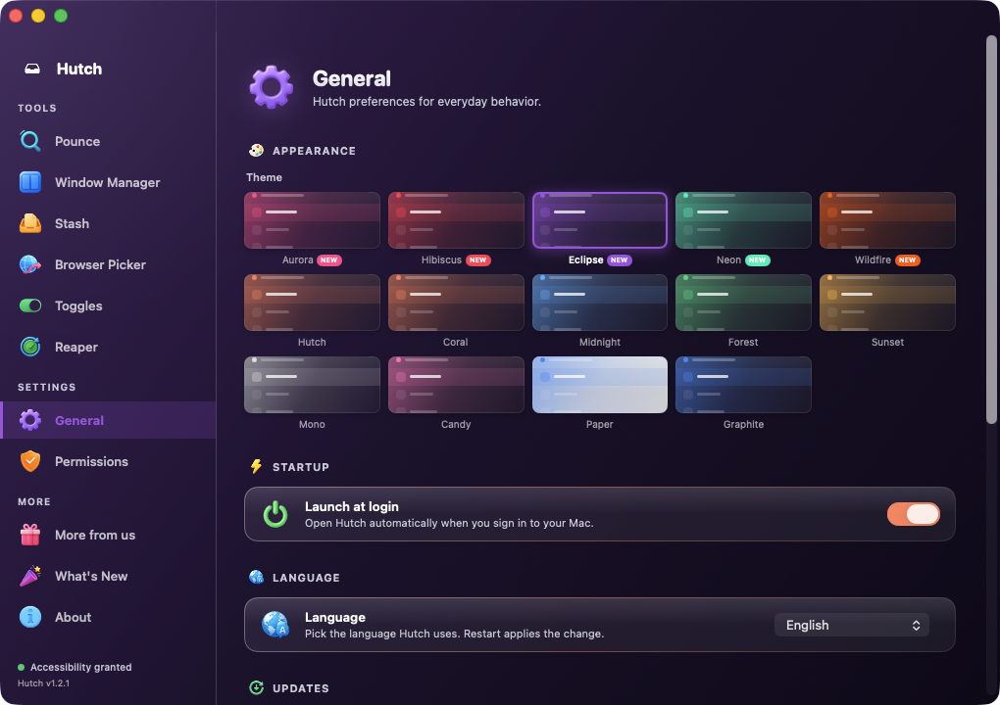
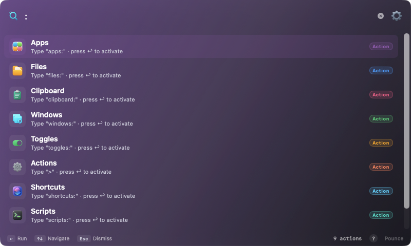
No Electron. No web views. Real screenshots of the tools in the drawer today — more on the way.
Hit ⌘Space, then search apps, files, clipboard and open windows — do inline math, run system actions, or ask your own AI. Type : to browse every scope, ⌘K on any result for quick actions.
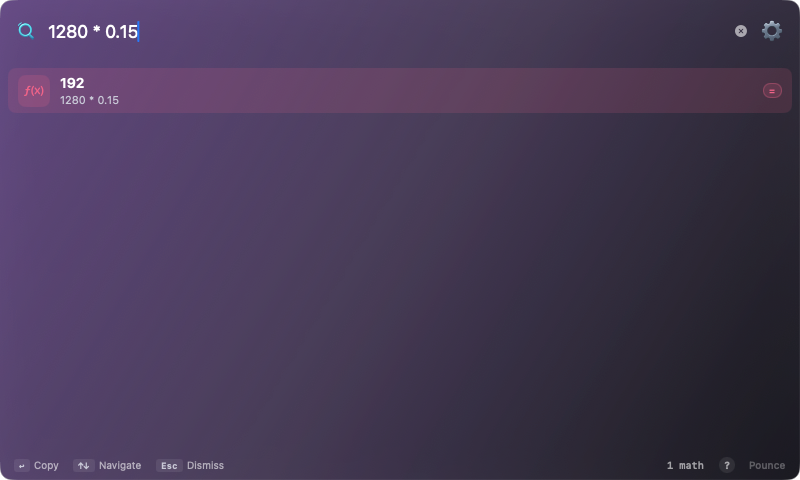
Type a few characters and Pounce works out what you mean — a sum, a currency, an action, an app.
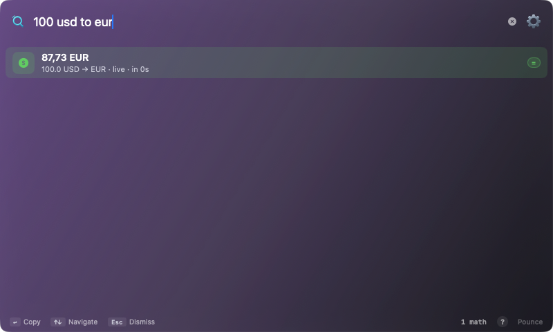
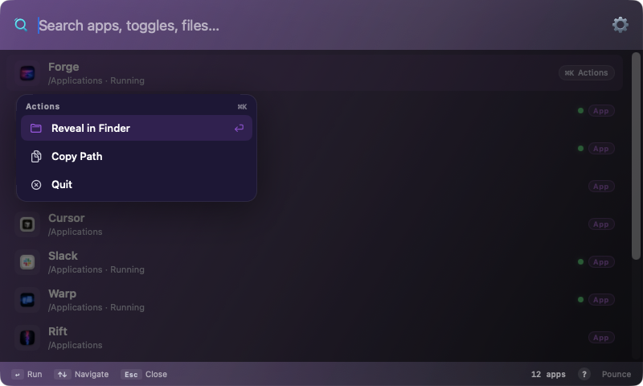
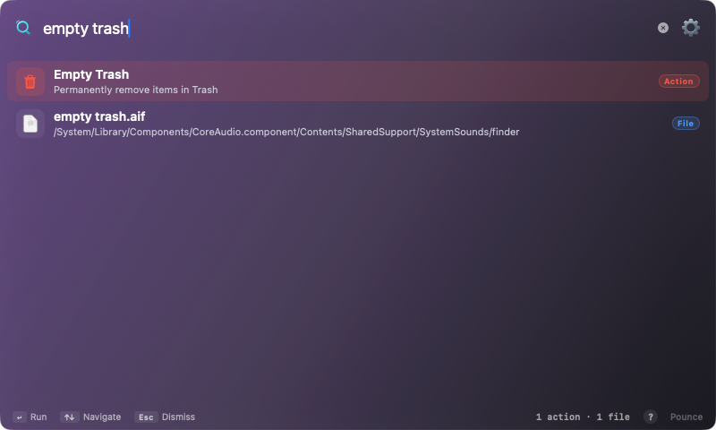
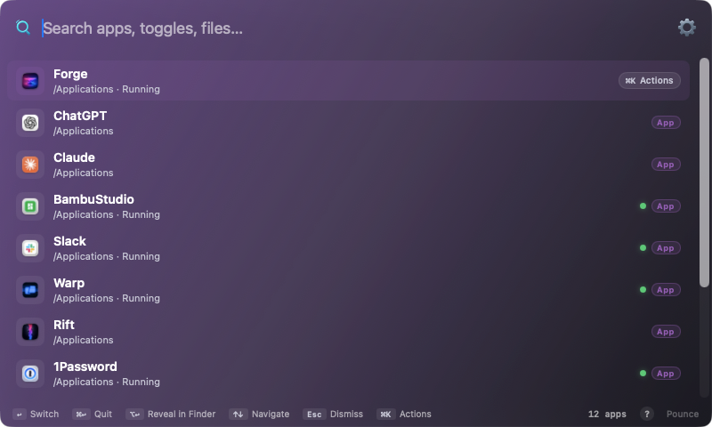
Halves, quarters, thirds, or a custom split. Click a region on the grid or fire a ⌃⌥ hotkey — it works in any app, drag-to-snap at the screen edge, and remembers a preset per app.
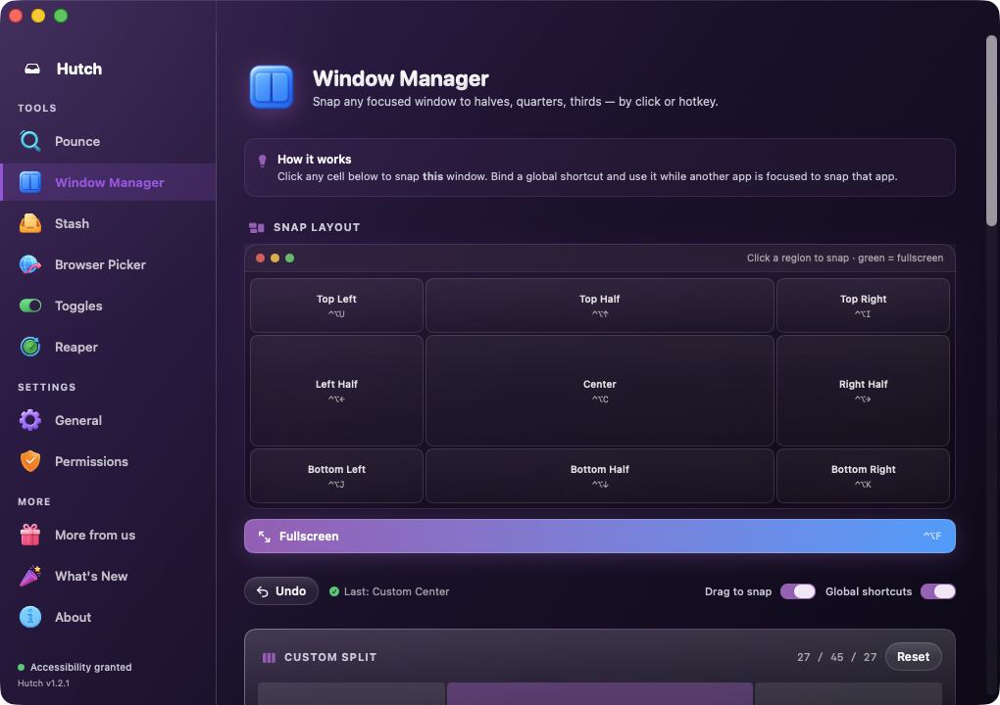
A floating shelf that appears right where you're dragging. Pile up files and images from any app — even straight from the browser — then drop them where they belong. Shake or hotkey to summon.
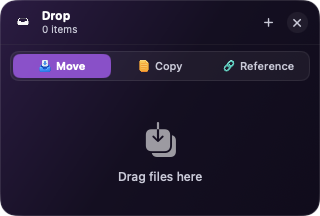
A menu-bar popover for the switches buried three menus deep — Dark Mode, Caffeinate, Focus, sleep and shutdown timers, mic mute — plus live camera and mic in-use indicators. Whatever's on stays lit; long-press to drag your favourites into order, and search to jump straight to one.
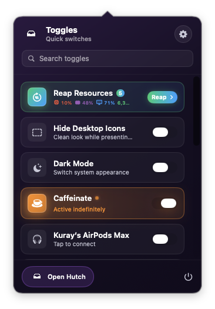
Make Hutch your default browser and route every link by rule — work URLs to Chrome, personal to Safari — or pop a keyboard-driven picker and press 1–9 to launch. Rules by site or by the app the link came from.
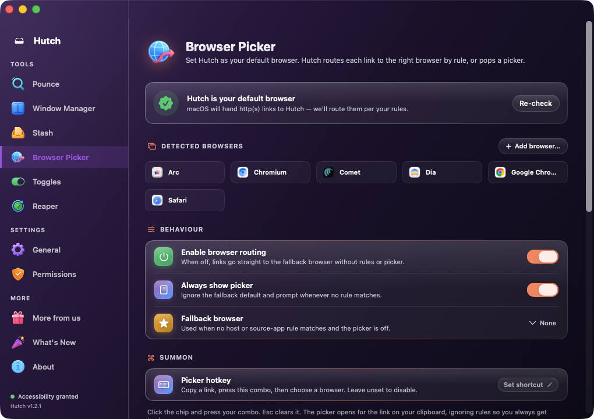
Reaper samples every process for CPU, memory, real power draw and GPU use, spots the hogs and the apps you left running last Tuesday, then walks you through them one at a time. Quit, force, keep, or never ask again — nothing closes without your say-so, and a polite quit still lets an app ask you to save.
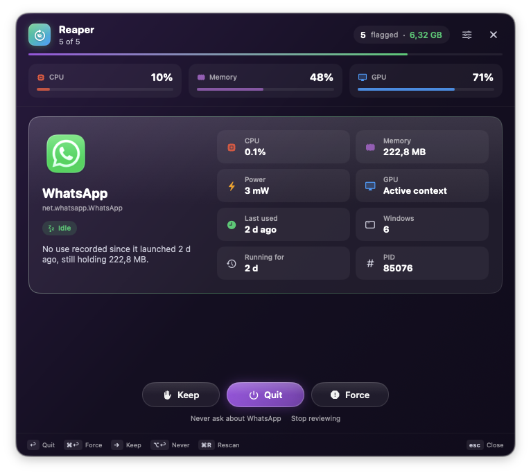
A paid utility's worth of tools — free, forever, as a Coursion portfolio project.
No Electron, no web views. Cold-starts in milliseconds and feels like macOS — because it is macOS.
No accounts, no telemetry, no uploads. Hutch's only network call is checking for its own updates.
One tray icon, every tool. Hutch only joins the Dock and ⌘-Tab while its dashboard is open.
Sparkle-signed updates ship over the air. Apple-notarized DMGs, EdDSA-verified — no App Store middleman.
Free, notarized, and ready in one command.
brew install --cask coursion-studio/tap/hutch
macOS 15 (Sequoia) or later · Developer ID signed & notarized